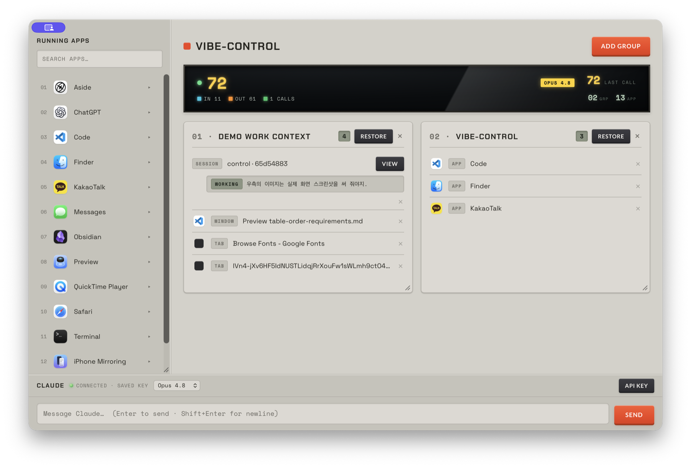

AI 일꾼은 무한히 늘릴 수 있습니다. 하지만 사람이 동시에 붙잡을 수 있는 프로젝트는 몇 개뿐입니다.
병목은 모델이 아니라 컨텍스트 스위칭입니다. 프로젝트 하나에 VS Code, Claude Code,
테스트 창, 문서가 매달리고 — 프로젝트가 서너 개만 돼도 Alt-Tab만 하다가 당신의 뇌 토큰을 모두 소비합니다.
VIBE-CONTROL로 여러 바이브 코딩 프로젝트를 손쉽게 관리하세요.
// Tauri · Rust + React · 완전 오프라인 동작 · 데이터는 내 기기에만

프로젝트별 리소스를 하나의 그룹으로 저장. 실행 중인 앱을 카드로 드래그해 등록합니다.
DRAG · GROUPSafari/Chrome 탭, Finder 폴더, 개별 창까지 펼쳐 보고 원하는 것만 최전면으로 불러옵니다.
PER-RESOURCE묶음에 담긴 앱·URL·폴더·창을 한 번에 다시 엽니다. 일부가 닫혀 있어도 나머지는 계속 복원.
RESTORE REPORTClaude Code 세션을 읽어 상태를 카드에 표시하고, 재개하거나 터미널로 바로 포커스합니다.
RESUME · VIEWAWS Bedrock으로 연결되는 프롬프트 콘솔이 하단에 내장. 작업 흐름을 벗어나지 않습니다.
BEDROCK상단 K.O. II 미터가 오늘의 토큰 사용량(IN/OUT/CALLS)을 한눈에 보여줍니다.
TODAY · TOKENS왼쪽 패널이 실행 중인 앱을 1초마다 갱신. 앱을 펼치면 탭·창·폴더가 그대로 드러납니다.
필요한 앱·창·탭을 프로젝트 그룹으로 드래그. 중복은 알아서 걸러집니다.
다음 날, 다른 프로젝트로 전환할 때 복원 버튼 한 번. 작업 환경이 그 자리에 그대로.
하단 콘솔에서 바로 Claude에게 물어보세요. 연결은 AWS Bedrock을 통하고, 상단 LCD는 오늘의 토큰 사용량을 실시간에 가깝게 갱신합니다.
Rust + React 기반의 Tauri 앱. 저장소를 클론해 소스에서 바로 실행할 수 있습니다.